No Palco
Plataforma de talentos
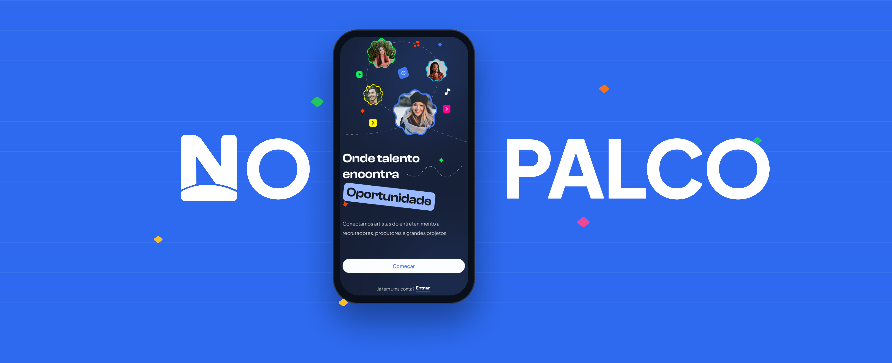
Contexto
Um mercado bilionário, mas ainda muito informal
Artistas independentes ainda dependem muito de canais informais para divulgar o próprio trabalho e encontrar oportunidades. Sem um espaço adequado para apresentar seus projetos, fica mais difícil mostrar seu trabalho de forma profissional e alcançar novas oportunidades.
R$ 217,4 bi
economia criativa no Brasil
7,1 mi
pessoas empregadas no setor
60%
dos trabalhadores da cultura na América Latina atuam sem vínculo formal
Meu papel
Fiquei à frente da pesquisa, do planejamento e das entrevistas, além de organizar os principais achados para orientar as decisões do projeto. O design visual foi desenvolvido em conjunto com Maria Eduarda Vieira.
O desafio
O problema não era só encontrar vagas.
A pesquisa mostrou que os artistas também tinham dificuldade para organizar e apresentar o próprio trabalho de forma profissional.
O cronograma não permitiu entrevistar recrutadores. Por isso, a pesquisa ficou concentrada nos artistas, complementada por benchmarking e desk research para entender também o outro lado da relação.
O que descobrimos, e o que fizemos com isso
Entrevistamos 4 artistas independentes para entender como divulgam seu trabalho hoje. Organizamos os relatos em um Diagrama de Afinidades e identificamos três padrões: rotina de trabalho, saúde mental e financeira, e barreiras do mercado informal.

Pesquisa → decisões de produto
Os relatos revelaram três gargalos na rotina dos artistas: apresentar o portfólio, acompanhar o retorno das candidaturas e negociar o próprio cachê.
"Cada pessoa pede de um jeito diferente: PDF, link, Instagram."
O achado
Organizar o portfólio era um dos maiores atritos da rotina.
Decisão
Onboarding estruturado + upload + sugestões de IA.
"Uma agência me mandava só: 'Reprovado'."
O achado
A falta de retorno gerava insegurança.
Decisão
Status da candidatura: Enviado → Visualizado → Selecionado.
"Pediam pro ator propor o próprio cachê."
O achado
Faltava estrutura para negociar.
Decisão
Chat com modelo de contrato e estimativa de cachê.
Estrutura do produto
O benchmark de Backstage e Casting Networks revelou três padrões importantes: centralização, padronização e transparência.
A jornada dentro do produto
Mapeamos os principais caminhos de artistas e recrutadores para organizar a experiência.
Visão geral dos principais caminhos da experiência.
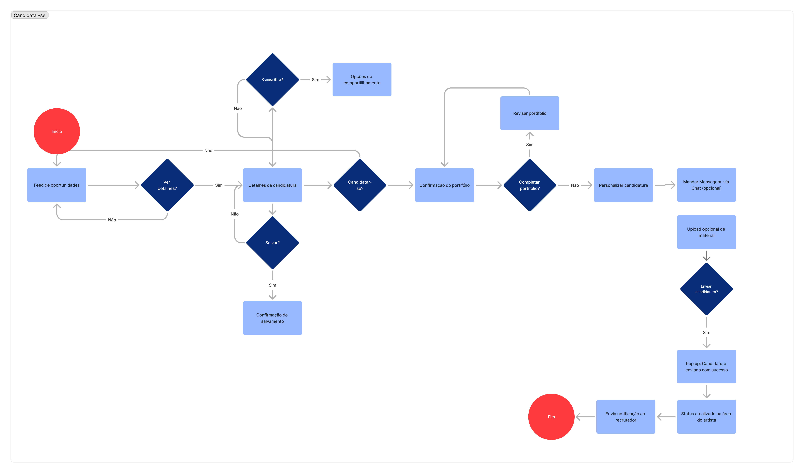
Estruturando a experiência
Começamos com wireframes no papel para testar estrutura e hierarquia antes de avançar para a alta fidelidade.
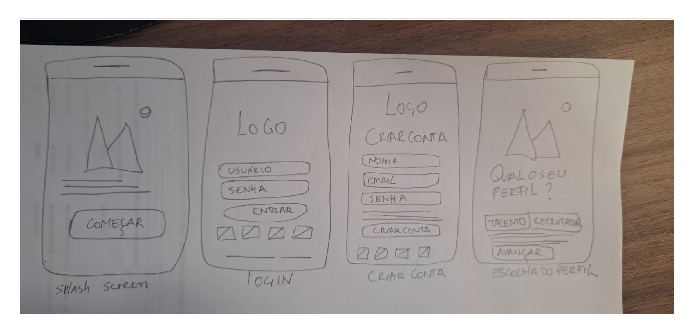
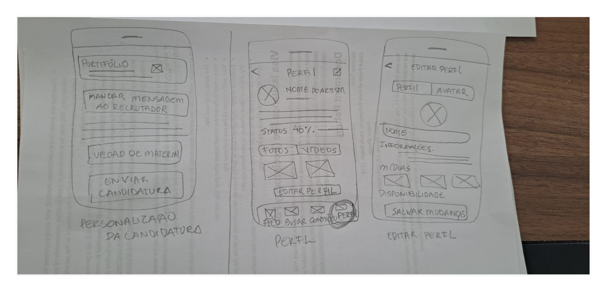
Uma plataforma para conectar talentos e oportunidades
A solução centraliza perfil, portfólio, oportunidades e comunicação em uma única experiência, facilitando a apresentação dos artistas e a busca por talentos.
01 · Criar um perfil profissional
O artista escolhe seu perfil, seleciona suas áreas de talento e monta seu perfil artístico em poucos passos.
Escolha do perfil
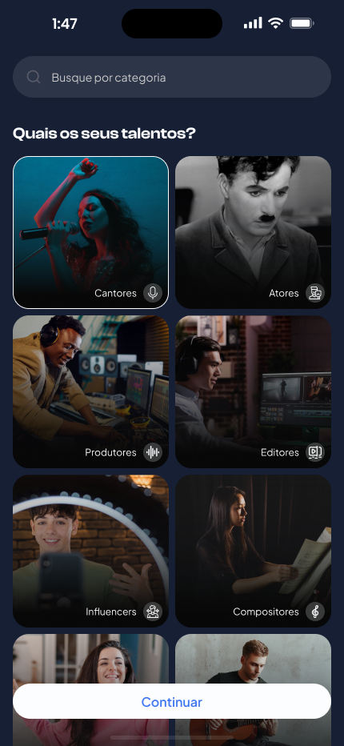
Seleção de talentos
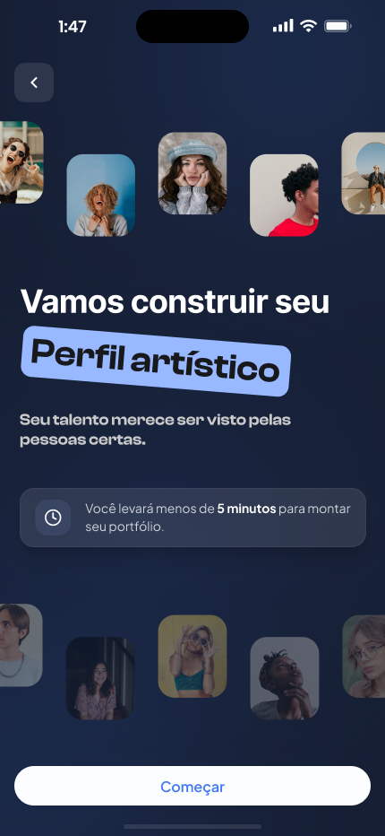
Criação do perfil
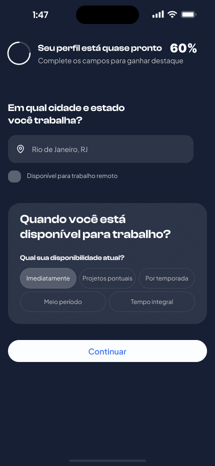
Informações profissionais
02 · Encontrar oportunidades
Uma busca mais simples para encontrar oportunidades alinhadas ao perfil de cada artista.
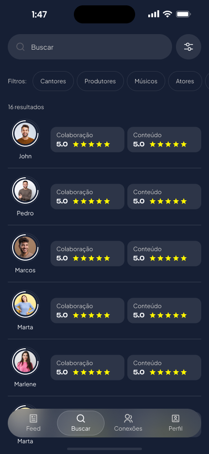
Resultados. Visualização das oportunidades encontradas.
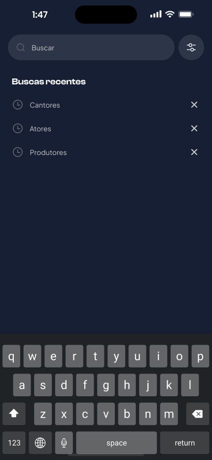
Busca. Busca por categoria ou termo específico.
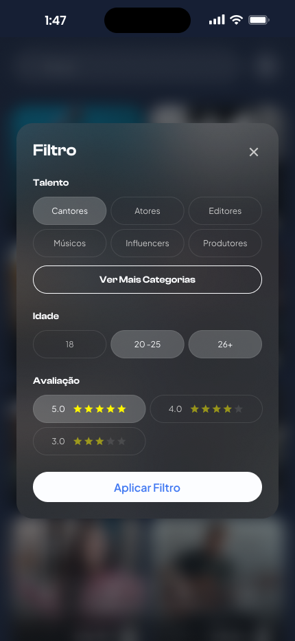
Filtros. Refinamento dos resultados por perfil, idade e avaliação.
03 · Apresentar seu trabalho
Um perfil organizado para reunir trabalhos, informações e formas de apresentação em um só lugar.
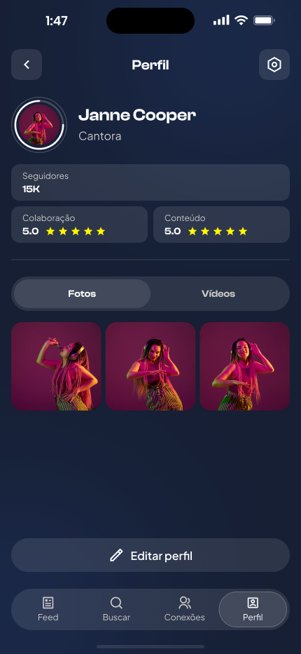
Perfil público. Uma visão completa do trabalho do artista.
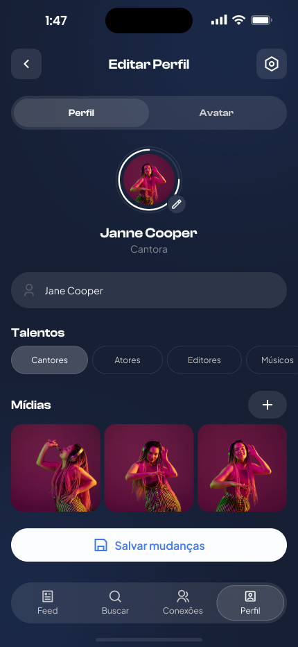
Editar perfil. Organização das informações e áreas de atuação.
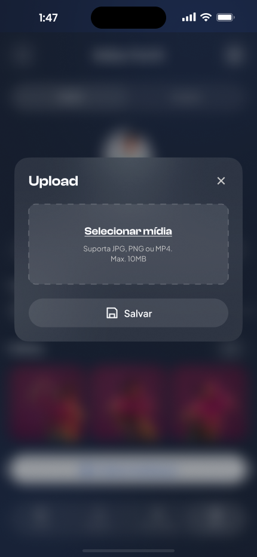
Adicionar trabalhos. Inclusão de fotos e outros materiais no perfil.
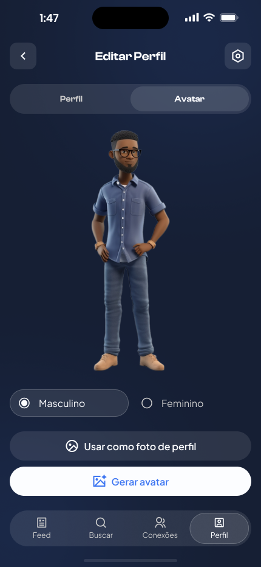
Personalizar apresentação. Personalização da imagem usada no perfil.
04 · Criar conexões
Uma forma simples de conectar artistas e profissionais e iniciar novas oportunidades.
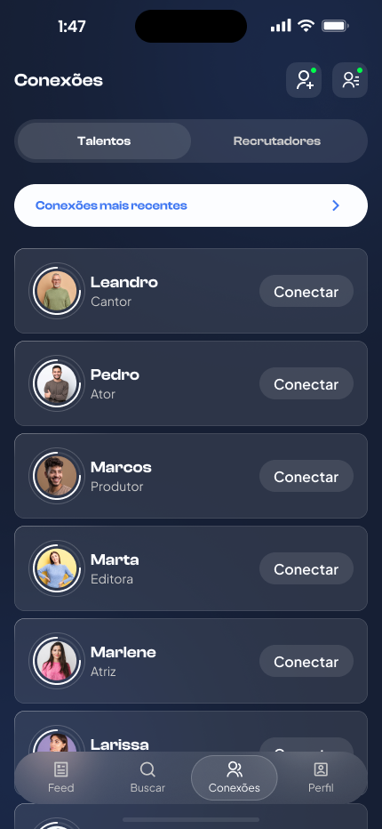
Encontrar pessoas. Visualização de talentos e possibilidade de iniciar uma conexão.
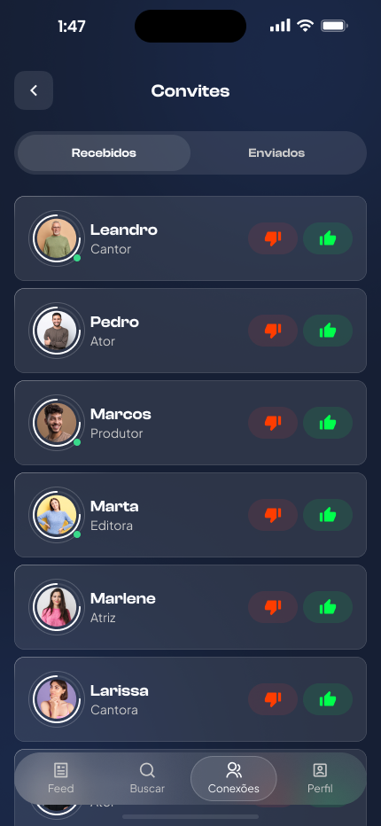
Gerenciar convites. O usuário pode aceitar ou recusar convites recebidos.
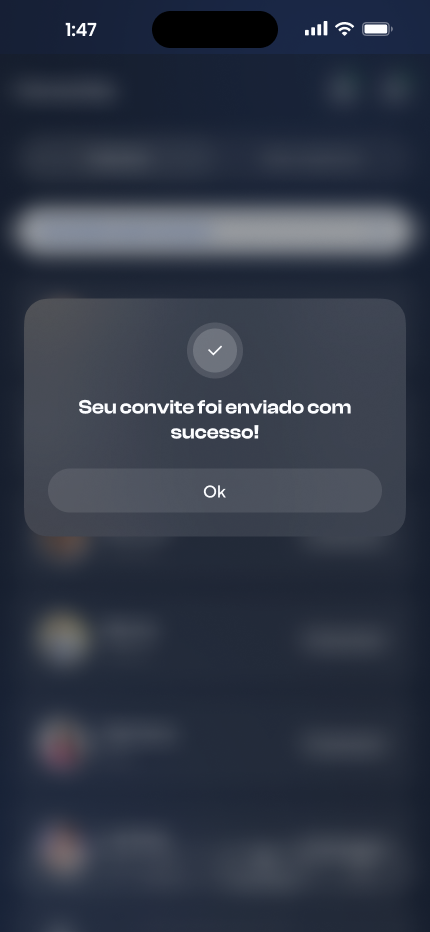
Confirmar conexão. Feedback após o envio do convite.
Testamos, encontramos problemas, ajustamos
2
participantes
5
tarefas
OBJETIVO DO TESTE
Avaliar se os primeiros fluxos da experiência eram claros e fáceis de concluir.
Escolha do perfil
Usuários tiveram dúvida entre Talento e Recrutador.
AJUSTE
Maior contraste e hierarquia na escolha.
Seleção de talentos
A seleção de múltiplas categorias não era suficientemente clara.
AJUSTE
Indicação mais clara de múltipla seleção.
Elemento visual
O logo desaparecia durante a navegação.
AJUSTE
Elemento visual fixo no topo.
A partir dos testes, ajustamos a escolha do perfil, a seleção de talentos e a navegação para tornar a experiência mais clara.
Aprendizados
A pesquisa revelou necessidades que não estavam previstas no conceito inicial.
Apresentar o trabalho precisava fazer parte da experiência.
Artistas e recrutadores têm objetivos diferentes, então as jornadas precisaram ser organizadas.